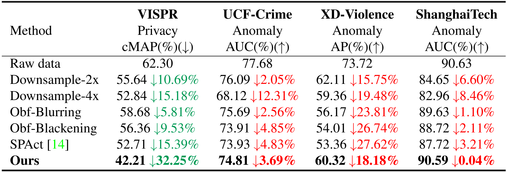

Anonymization Visualizations
UCF-Crime: Assault033_x264.mp4
Raw

Anonymized

UCF-Crime: Fighting015_x264.mp4
Raw

Anonymized

UCF-Crime: Shoplifting026_x264.mp4
Raw

Anonymized

Video anomaly detection (VAD) without human monitoring is a complex computer vision task that can have a positive impact on society if implemented successfully. While recent advances have made significant progress in solving this task, most existing approaches overlook a critical real-world concern: privacy. With the increasing popularity of artificial intelligence technologies, it becomes crucial to implement proper AI ethics into their development. Privacy leakage in VAD allows models to pick up and amplify unnecessary biases related to people's personal information, which may lead to undesirable decision making.
In this paper, we propose TeD-SPAD, a privacy-aware video anomaly detection framework that destroys visual private information in a self-supervised manner. In particular, we propose the use of a temporally-distinct triplet loss to promote temporally discriminative features, which complements current weakly-supervised VAD methods. Using TeD-SPAD, we achieve a positive trade-off between privacy protection and utility anomaly detection performance on three popular weakly supervised VAD datasets: UCF-Crime, XD-Violence, and ShanghaiTech. Our proposed anonymization model reduces private attribute prediction by 32.25% while only reducing frame-level ROC AUC on the UCF-Crime anomaly detection dataset by 3.69%.
Trade-off plots between anomaly detection benchmarks AUC and VISPR privacy attribute prediction cMAP for different privacy preserving methods. Optimal trade-off point is top left of plot (higher AD performance, lower PA prediction ability). Our method (green star) is able to achieve a better trade-off than the other methods by incorporating the temporal-distinctiveness objective.
Below are qualitative results highlighting the improvement in both privacy preservation and anomaly detection performance when compared to existing privacy preserving techniques.
In this paper, we highlight the importance of privacy, a previously neglected aspect of video anomaly detection. We present TeD-SPAD, a framework for applying Temporal Distinctiveness to Self-supervised Privacy-preserving video Anomaly Detection. TeD-SPAD demonstrates the effectiveness of using a temporally-distinct triplet loss while anonymizing an action recognition model, as it enhances feature representation temporal distinctiveness, which complements the downstream anomaly detection model. By effectively destroying spatial private information, we remove the model's ability to use this information in its decision-making process. As a future research direction, this framework can be extended to other tasks, such as spatio-temporal anomaly detection. The anonymizing encoder-decoder may also be made more powerful with techniques using recent masked image modeling. It is our hope that this work contributes to the development of more responsible and unbiased automated anomaly detection systems.
For more technical details and results, check out our attached main paper, thank you!
@inproceedings{fioresi2023tedspad,
title={TeD-SPAD: Temporal Distinctiveness for Self-supervised Privacy-preservation for video Anomaly Detection},
author={Fioresi, Joseph and Dave, Ishan and Shah, Mubarak},
booktitle={ICCV},
year={2023}
}